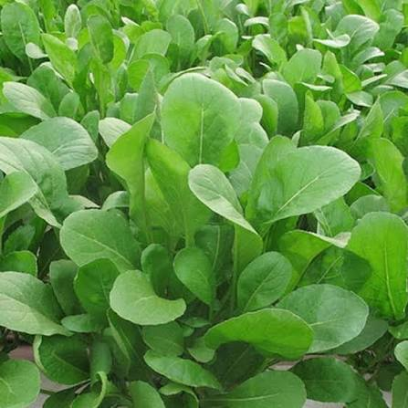

📖 Descrição
A Rúcula Folha Larga (Eruca sativa) é uma hortaliça de crescimento rápido, muito apreciada pelo sabor levemente picante e pelas folhas largas e macias. É uma excelente opção para hortas escolares por ser fácil de cultivar e rica em nutrientes.
🌱 Cuidados
- Necessita de sol pleno ou meia-sombra.
- Prefere solo fértil, leve e rico em matéria orgânica.
- Manter irrigação frequente sem encharcar.
- Retirar folhas secas para estimular novos brotos.
- A colheita pode começar entre 30 e 40 dias após o plantio.
🌎 Origem
Originária da região do Mediterrâneo e da Ásia Ocidental.
🐝 Atrai quais polinizadores?
Quando floresce, atrai abelhas e outros insetos polinizadores, contribuindo para a biodiversidade da horta.
🍽️ Parte comestível
Folhas.
💚 Benefícios para a saúde
- Rica em vitaminas A, C e K.
- Fonte de ferro, cálcio e fibras.
- Auxilia no fortalecimento do sistema imunológico.
- Possui ação antioxidante.
- Contribui para uma alimentação saudável.
🌼 Curiosidade
A rúcula pertence à mesma família botânica do brócolis, da couve, do repolho e do rabanete, por isso essas plantas apresentam várias características em comum.
🌍 Importância para o meio ambiente
Seu cultivo incentiva práticas sustentáveis, favorece a biodiversidade e contribui para a educação ambiental dos estudantes.
🌾 Época de plantio
Pode ser cultivada durante praticamente todo o ano, apresentando melhor desenvolvimento em temperaturas amenas.
📱 Acesse esta página pelo QR Code

Escaneie o QR Code para acessar esta página pelo celular.